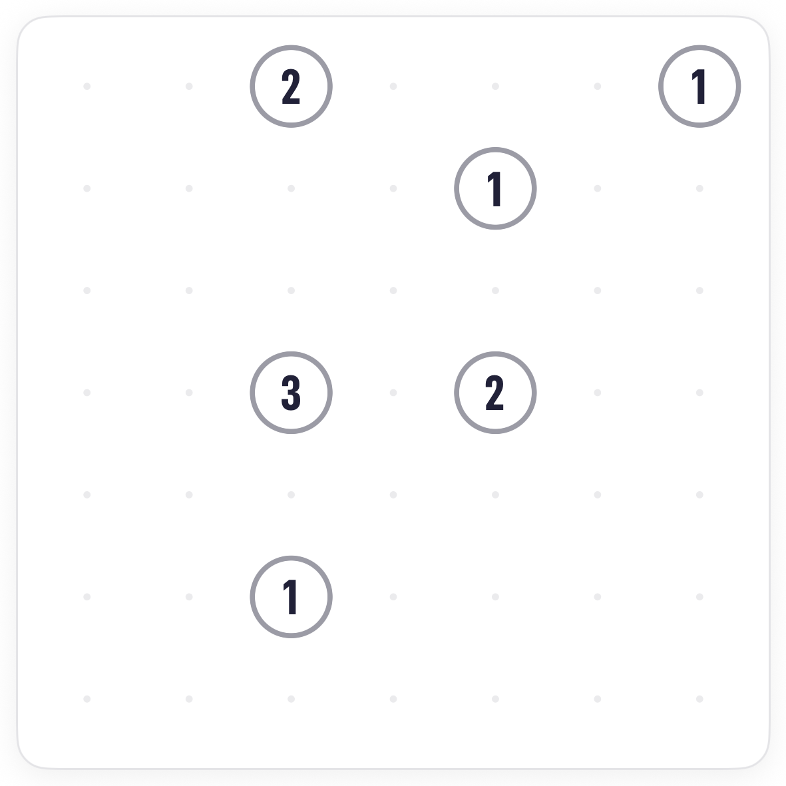
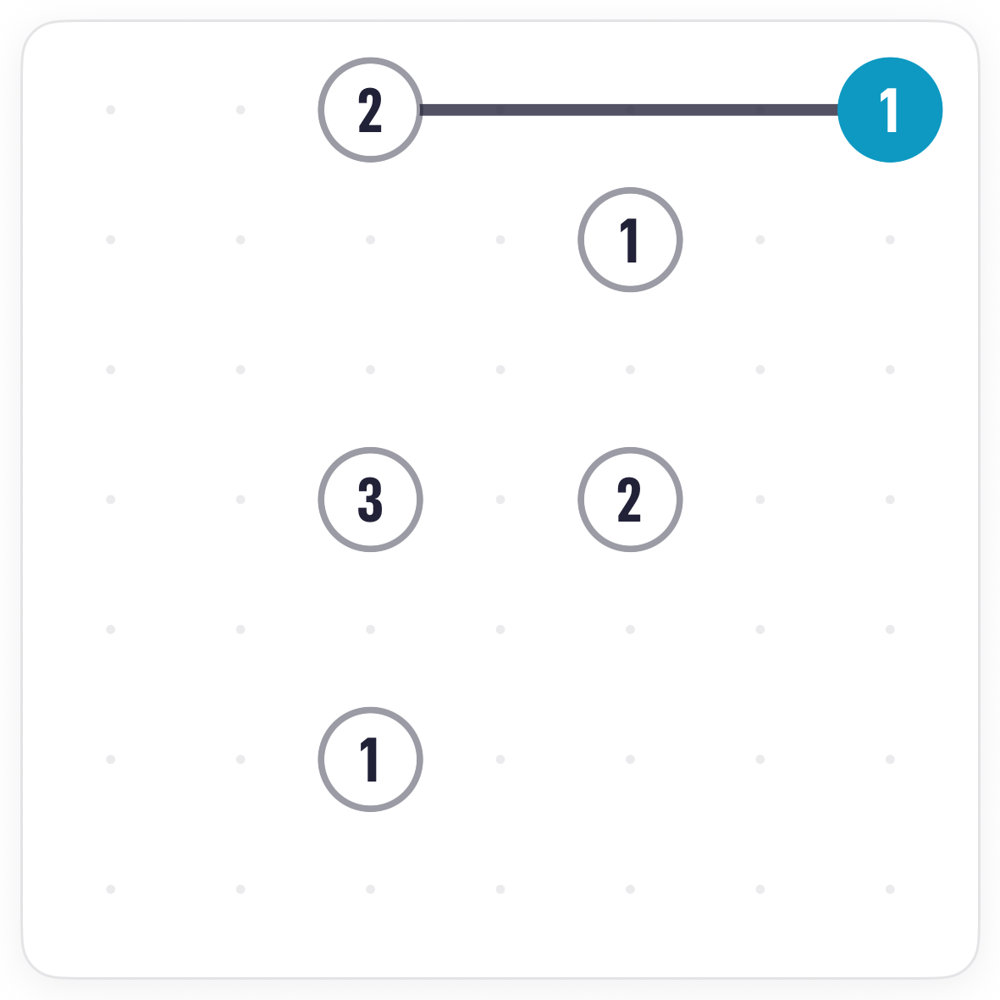
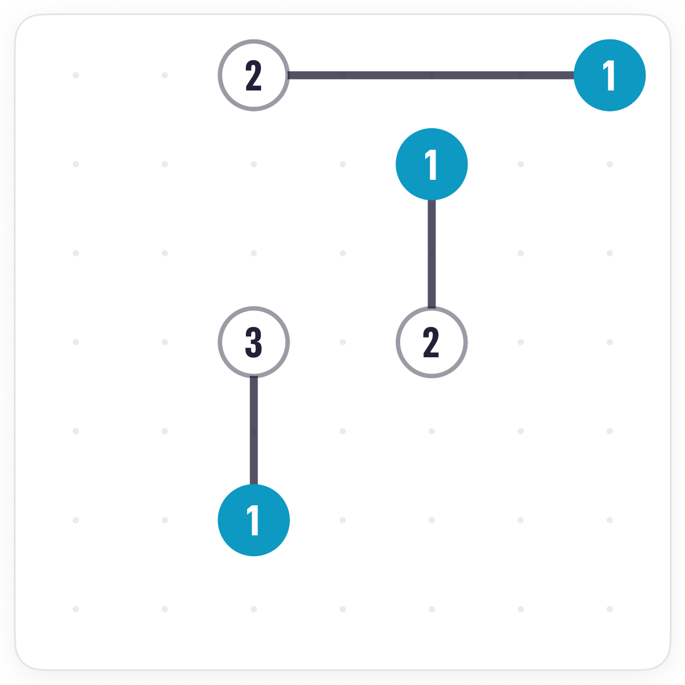
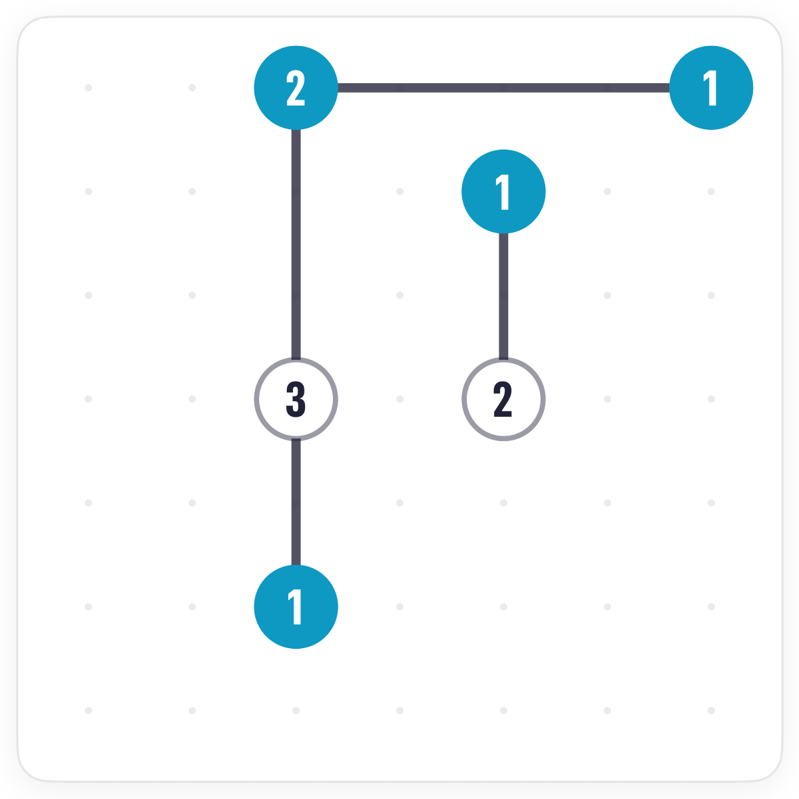
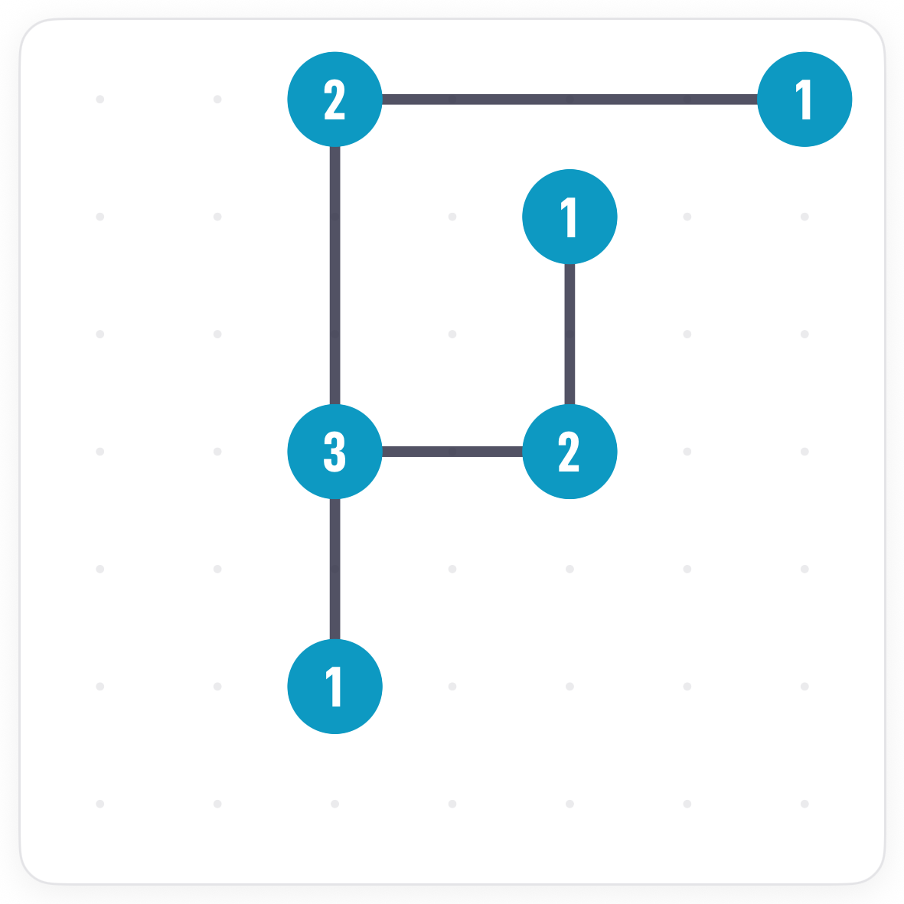

How to play Bridges.
Bridges is Pocketful's Hashiwokakero, or Hashi. Islands with numbers, and you throw bridges between them until every number is met and every island is connected. Start with the islands that have no choice.
The board.
Numbered islands on a grid of dots. The number on an island is exactly how many bridges will touch it. Bridges run straight up, down, left or right to the next island in that direction.

The rules.
Drag out of an island toward its neighbour to throw a bridge. Drag the same pair again for a second bridge. Tap a bridge to remove it.
Islands with one way out.
Look at each island and count its possible neighbours: the islands it could reach in a straight line. An island whose number matches what it can reach has no choice, and a 1 with a single neighbour is the simplest case of all.




Common questions.
Can a bridge pass over an island?
No. A bridge always stops at the first island it meets in that direction.
What does connected mean?
You can walk from any island to any other along bridges. A board where the numbers all match but one group is cut off from the rest is not finished.
Can I throw three bridges between two islands?
No. Two is the maximum for any pair.